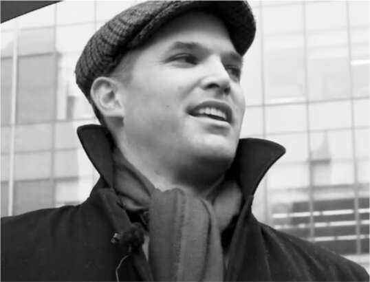
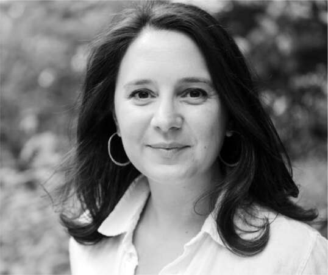

Matt Taibbi
“Ông muốn tôi tố cáo chính công ty của ông sao?” nhà báo Matt Taibbi hỏi Musk với vẻ hơi ngờ vực.
“Cứ tự nhiên,” Musk đáp. “Đây không phải là một chuyến tham quan có hướng dẫn viên của Bắc Triều Tiên. Anh có thể đi bất cứ đâu anh muốn.”
Qua nhiều năm, những người kiểm duyệt nội dung của Twitter đã ngày càng tích cực cấm những gì họ coi là ngôn từ gây hại. Tùy vào quan điểm, có ba cách nhìn nhận điều này: (1) là một nỗ lực đáng khen ngợi nhằm ngăn chặn sự lan truyền thông tin sai lệch gây nguy hiểm về y tế, làm suy yếu nền dân chủ, kích động bạo lực, gieo rắc thù hận hoặc thực hiện lừa đảo; (2) là một nỗ lực ban đầu có thiện chí nhưng giờ đã đi quá xa trong việc đàn áp các ý kiến bất đồng với chính thống về y tế và chính trị hoặc xúc phạm sự nhạy cảm thái quá của đội ngũ nhân viên cấp tiến và "woke" của Twitter; hoặc (3) là một sự thông đồng mờ ám giữa các nhân tố của "Nhà nước Ngầm" cấu kết với các công ty công nghệ lớn và các phương tiện truyền thông cũ để duy trì quyền lực của họ.
Musk nhìn chung thuộc nhóm thứ hai, nhưng ông bắt đầu nuôi những nghi ngờ đen tối hơn đẩy ông về phía nhóm thứ ba. “Dường như có rất nhiều thứ bị che giấu,” ông nói với David Sacks, một người bạn đồng hành trong cuộc chiến chống lại "woke". “Rất nhiều chuyện mờ ám.”
Sacks đề nghị ông nói chuyện với Taibbi, một cựu cây bút của Rolling Stone và các ấn phẩm khác, người khó bị gán ghép về mặt ý thức hệ. Ông ta sẵn sàng, thậm chí là háo hức, thách thức giới tinh hoa cố hữu. Musk, người không quen biết ông ta, đã mời ông ta đến trụ sở Twitter vào cuối tháng 11. “Ông ấy có vẻ là người không ngại đắc tội với người khác,” Musk nói, một lời khen ngợi chân thành hơn so với hầu hết mọi người. Ông mời Taibbi dành thời gian tại trụ sở Twitter để lục lọi các tài liệu, email và tin nhắn Slack cũ của những nhân viên công ty đã từng vật lộn với các vấn đề kiểm duyệt nội dung.
Vậy là "Hồ sơ Twitter" đã được khởi động, một sự kiện lẽ ra nên là một cuộc thanh lọc lành mạnh và minh bạch, tạo cơ hội để suy ngẫm về sự thiên vị của truyền thông và tính phức tạp của việc kiểm duyệt nội dung. Tuy nhiên, nó lại bị cuốn vào vòng xoáy tranh cãi, khiến mọi người chia rẽ thành các phe phái trên các chương trình trò chuyện và mạng xã hội. Musk càng đổ thêm dầu vào lửa bằng những lời lẽ kích động khi công bố các chuỗi bài đăng trên Twitter kèm biểu tượng cảm xúc bỏng ngô và pháo hoa. Ông viết: "Đây là cuộc chiến cho tương lai của nền văn minh. Nếu tự do ngôn luận bị mất đi ngay cả ở Mỹ, thì chế độ chuyên chế là điều tất yếu."
Ngay khi Taibbi chuẩn bị công bố báo cáo đầu tiên vào ngày 2 tháng 12, Musk đã có chuyến đi gấp rút đến New Orleans để gặp gỡ bí mật với tổng thống Pháp Emmanuel Macron để thảo luận, trớ trêu thay, về việc Twitter cần phải tuân thủ các quy định về phát ngôn thù địch của Châu Âu. Khi có những vấn đề pháp lý phát sinh vào phút chót liên quan đến những gì Taibbi dự định xuất bản, việc công bố đã phải trì hoãn cho đến khi Musk kết thúc cuộc gặp với Macron và có thể phản hồi lại các luật sư.
Chuỗi 37 bài đăng đầu tiên của Taibbi cho thấy Twitter đã thiết lập các hệ thống đặc biệt dành cho các chính trị gia, FBI và các cơ quan tình báo để họ đóng góp ý kiến về những bài đăng nào nên bị xóa. Đáng chú ý nhất, Taibbi đã đưa vào các tin nhắn từ năm 2020, khi Yoel Roth và những người khác tại Twitter tranh luận về việc có nên chặn các liên kết đến một bài báo của New York Post về chiếc máy tính xách tay được cho là (và hóa ra là đúng) của con trai Joe Biden, Hunter, bỏ lại hay không. Các tin nhắn cho thấy nhiều người trong số họ cố gắng tìm lý do để cấm đề cập đến câu chuyện, chẳng hạn như tuyên bố rằng nó vi phạm chính sách chống lại việc sử dụng tài liệu bị hack hoặc có thể là một phần của âm mưu tung tin giả của Nga. Đó là những vỏ bọc mỏng manh cho việc kiểm duyệt một câu chuyện, và cả Roth và Jack Dorsey sau đó đều thừa nhận rằng làm như vậy là một sai lầm.
Những tiết lộ này và sau đó của Taibbi đã được một số hãng truyền thông lớn đưa tin, chẳng hạn như Fox News, nhưng phần lớn các phương tiện truyền thông truyền thống lại gán cho nó cái mác, như một hashtag trên Twitter đã nói, là "#chuyệnvặt". Joe Biden không phải là quan chức chính phủ vào thời điểm câu chuyện về chiếc máy tính xách tay bị vỡ lở, vì vậy các yêu cầu không tiết lộ sự kiểm duyệt trực tiếp của chính phủ cũng như không vi phạm trắng trợn Tu chính án thứ nhất. Nhiều yêu cầu mà nhóm của Biden đưa ra, được thực hiện thông qua các kênh Twitter chính thức, là điều dễ hiểu, chẳng hạn như việc xóa một bài đăng của James Woods, một cựu diễn viên, về một bức ảnh tự sướng khiêu dâm nằm trong máy tính xách tay của Hunter Biden. "Không, bạn không có quyền theo Hiến pháp để đăng ảnh nhạy cảm của Hunter Biden lên Twitter", tiêu đề trên The Bulwark viết.
Tuy nhiên, có một phát hiện quan trọng hơn được tiết lộ trong các chuỗi bài đăng của Taibbi: Twitter đã trở thành một cộng tác viên trên thực tế với FBI và các cơ quan chính phủ khác, trao cho họ quyền gắn cờ một lượng lớn nội dung để đề xuất xóa bỏ. Taibbi viết: "Về cơ bản, một danh sách dài các cơ quan thực thi pháp luật đã điều hành Twitter như một nhà thầu bất đắc dĩ."
Thực tế, tôi nghĩ mọi chuyện hơi khác một chút: Twitter thường hành động như một nhà thầu tự nguyện. Thay vì lên tiếng khi cảm thấy quá nhiều áp lực từ chính phủ, ban quản lý Twitter dường như rất muốn chiều lòng. Những tiết lộ của Taibbi cho thấy một sự thật đáng lo ngại nhưng không bất ngờ: những người kiểm duyệt tại Twitter có xu hướng thiên vị việc ngăn chặn những câu chuyện có lợi cho Trump. Hơn 98% số tiền quyên góp của nhân viên công ty này dành cho Đảng Dân chủ. Một trường hợp liên quan đến cáo buộc FBI đã theo dõi chiến dịch tranh cử của Trump. Báo chí chính thống viết rằng những cáo buộc này đã bị các bot và trang trại troll của Nga thổi phồng. Yoel Roth, ở hậu trường, là một tiếng nói trung thực tại Twitter. "Tôi vừa xem xét các tài khoản," anh ấy viết trong một bản ghi nhớ nội bộ. "Không có tài khoản nào cho thấy dấu hiệu liên kết với Nga." Tuy nhiên, các giám đốc điều hành Twitter đã không dám thách thức câu chuyện "Russiagate" đã được chấp nhận.
Một lưu ý nhỏ về cách mạng xã hội có thể gây chia rẽ: Taibbi là một người theo chủ nghĩa biểu tượng chính trị độc lập, nhưng khi tôi theo dõi anh ấy trên Twitter, tôi nhận thấy các thuật toán của nó có thể củng cố việc phân loại ý thức hệ, đưa mọi người vào các nhóm đồng vọng cực tả hoặc cực hữu. Phần "Có thể bạn sẽ thích" trên Twitter của tôi ngay lập tức đề xuất tôi theo dõi Roger Stone, James Woods và Lauren Boebert.
Bari Weiss
Tối ngày 2 tháng 12, Bari Weiss đang ở nhà tại Los Angeles cùng vợ, Nellie Bowles, đọc Hồ sơ Twitter do Taibbi công bố. Cô cảm thấy ghen tị. "Đây là một câu chuyện hoàn hảo để chúng tôi thực hiện," cô nhớ lại mình đã nghĩ. Đó là lúc cô nhận được một tin nhắn bất ngờ từ Musk hỏi liệu cô có thể bay đến San Francisco tối hôm đó không.
Giống như Taibbi, Weiss là một nhà báo độc lập, khó phân loại về mặt ý thức hệ. Cả hai, cũng như Musk, đều ủng hộ tự do ngôn luận để chống lại thứ mà họ coi là sự thức tỉnh tiến bộ tạo ra một văn hóa kiểm duyệt, đặc biệt là trong giới truyền thông chính thống và các cơ sở giáo dục ưu tú. Weiss tự nhận mình là "một người theo chủ nghĩa tự do hợp lý lo ngại rằng những lời chỉ trích cực đoan của cánh tả đã bóp nghẹt tự do ngôn luận." Sau khi làm việc tại các trang xã luận của Wall Street Journal và New York Times, cô đã tập hợp một nhóm các nhà báo độc lập để tạo ra The Free Press, một bản tin dựa trên đăng ký trên Substack.
Musk đã gặp cô ngắn gọn sau khi anh được Sam Altman, người đồng sáng lập OpenAI của mình, phỏng vấn tại hội nghị Allen & Company ở Sun Valley vài tháng trước đó. Cô đã đến hậu trường để nói rằng cô rất vui vì anh ấy đang cố gắng mua Twitter, và họ đã trò chuyện trong vài phút. Khi Taibbi chuẩn bị xuất bản Hồ sơ Twitter của mình vào đầu tháng 12, Musk nhận ra rằng có quá nhiều tài liệu cho một nhà báo. Nhà đầu tư và người bạn công nghệ ủng hộ tự do ngôn luận Marc Andreessen của anh ấy đã đề nghị anh ấy gọi cho Weiss, vì vậy trên máy bay trở về từ chuyến đi nhanh chóng đến New Orleans để nói chuyện với Tổng thống Macron, anh ấy đã gửi tin nhắn bất ngờ mà cô ấy nhận được vào tối ngày 2 tháng 12.
Hai tiếng sau, cô và Bowles, cùng đứa con ba tháng tuổi, vội vã lên chuyến bay đến San Francisco. Khi họ đến tầng mười của trụ sở Twitter vào tối thứ Sáu lúc 11 giờ, Musk đang đứng bên máy pha cà phê, mặc chiếc áo khoác Starship màu xanh. Trong một khoảnh khắc cao hứng, ông dẫn họ chạy quanh tòa nhà, khoe kho áo phông “Stay Woke” và những dấu tích khác của chế độ cũ. "Bọn man di đã phá cổng và đang cướp bóc hàng hóa!", ông tuyên bố. Weiss ngạc nhiên, ông giống như một đứa trẻ vừa mua được một cửa hàng kẹo và vẫn không thể tin mình sở hữu nó. Ross Nordeen và James Musk, những người thân cận của Musk, đã chỉ cho Weiss và Bowles một số công cụ máy tính để tìm hiểu kho lưu trữ Slack của công ty. Họ ở đó đến 2 giờ sáng, sau đó James lái xe đưa họ về chỗ ở.
Sáng hôm sau, thứ Bảy, khi Weiss và Bowles đến, họ thấy Musk, người vẫn ngủ đêm trên ghế sofa trong thư viện của Twitter, lại ở bên máy pha cà phê, ăn ngũ cốc từ một chiếc cốc giấy. Trong hai giờ, họ ngồi trong phòng họp của ông và thảo luận về tầm nhìn của ông cho Twitter. Họ hỏi tại sao ông lại làm việc này? Ban đầu, ông trả lời rằng ông đã bị buộc phải mua công ty sau khi suy nghĩ lại về lời đề nghị hồi tháng Tư. "Thực ra, tôi không chắc mình vẫn muốn làm điều đó, nhưng các luật sư nói rằng tôi phải nuốt cục nghẹn này, nên tôi làm vậy", ông nói.
Nhưng sau đó, Musk bắt đầu nói một cách nghiêm túc về mong muốn tạo ra một diễn đàn công khai dành riêng cho tự do ngôn luận. Ông nói rằng điều đang bị đe dọa là "tương lai của nền văn minh". "Tỷ lệ sinh đang giảm mạnh, cảnh sát tư tưởng đang ngày càng mạnh". Ông tin rằng một nửa đất nước không tin tưởng Twitter, vì nó đã đàn áp một số quan điểm nhất định. Để đảo ngược điều đó sẽ cần sự minh bạch triệt để. "Chúng tôi có một mục tiêu ở đây, đó là xóa bỏ mọi hành vi sai trái trước đây và tiến lên với một khởi đầu mới. Tôi ngủ tại trụ sở Twitter vì một lý do. Đây là tình huống khẩn cấp."
"Cô gần như tin ông ấy", Weiss nói với tôi sau đó. Đó là một lời nhận xét chân thành chứ không phải mỉa mai.
Mặc dù ấn tượng, cô vẫn giữ một chút hoài nghi của một nhà báo độc lập. Tại một thời điểm trong cuộc trò chuyện kéo dài hai giờ, cô đã hỏi về việc lợi ích kinh doanh của Tesla ở Trung Quốc có thể ảnh hưởng đến cách ông quản lý Twitter như thế nào. Musk tỏ ra khó chịu. Đó không phải là điều mà cuộc trò chuyện hướng đến. Weiss vẫn kiên trì. Musk nói rằng Twitter thực sự sẽ phải cẩn thận về những từ ngữ mà nó sử dụng liên quan đến Trung Quốc, bởi vì hoạt động kinh doanh của Tesla có thể bị đe dọa. Ông nói rằng việc Trung Quốc đàn áp người Duy Ngô Nhĩ có hai mặt. Weiss cảm thấy lo lắng. Cuối cùng, Bowles đã xen vào để xoa dịu vấn đề bằng một vài câu nói đùa. Họ chuyển sang các chủ đề khác.
Thêm vào sự trớ trêu, hoặc ít nhất là sự phức tạp, là Musk phải kết thúc cuộc trò chuyện để bay đến Washington. Ông có một cuộc họp được lên lịch với các quan chức chính phủ cấp cao ở đó về một chủ đề tối mật liên quan đến việc phóng vệ tinh SpaceX.
Cuối tuần, Weiss và Bowles đã vội vã đến làm việc với Hồ sơ Twitter vào tối thứ Sáu, nhưng họ cảm thấy bực bội vì vẫn chưa có công cụ để truy cập kho lưu trữ tin nhắn Slack và email của Twitter. Bộ phận pháp chế, lo ngại về vấn đề quyền riêng tư, đã ngăn họ truy cập trực tiếp. Nordeen, chàng ngự lâm quân luôn có mặt khắp nơi, đã dùng máy tính xách tay của mình vào thứ Bảy để giúp họ. Nhưng đến ngày hôm sau, anh kiệt sức và đói bụng, cần phải giặt giũ, nên quyết định không đến. Suy cho cùng thì hôm đó là Chủ nhật. Vì vậy, anh đã mời Weiss và Bowles đến căn hộ của mình nhìn ra khu Castro của San Francisco, nơi họ dùng máy tính xách tay của anh để xem qua các tin nhắn trong kênh Slack công khai của Twitter.
Khi Weiss thúc giục bộ phận pháp chế xử lý thêm các tìm kiếm cho cô, cô nhận được cuộc gọi từ phó tổng cố vấn của công ty, người tự xưng là Jim. Khi cô hỏi họ của anh ta, anh ta nói "Baker". Weiss nhớ lại: "Tôi há hốc mồm." Jim Baker từng là tổng cố vấn của FBI, và ông ta không được lòng một số nhóm bảo thủ vì liên quan đến nhiều tranh cãi. "Cái quái gì vậy?" cô nhắn tin cho Musk. "Giống như anh đang yêu cầu người đó tự điều tra mình vậy? Điều này thật vô lý."
Musk nổi giận. "Giống như yêu cầu Al Capone tự kiểm tra thuế của mình vậy," ông nói. Ông triệu tập Baker đến một cuộc họp, và họ đã xảy ra xung đột về các đảm bảo quyền riêng tư được quy định theo một sắc lệnh đồng ý giữa Twitter và Ủy ban Thương mại Liên bang. "Anh có thể cho tôi biết các nguyên tắc chính trong sắc lệnh đồng ý là gì không?" Musk thách thức anh ta. "Vì tôi đang có nó trước mặt. Anh có thể kể tên bất cứ điều gì trong đó không?" Đó không phải là một cuộc thảo luận có kết thúc tốt đẹp. Baker rất thông thạo vấn đề này, nhưng câu trả lời của anh ta không thể làm hài lòng Musk, người đã ngay lập tức sa thải anh ta.
Lọc hiển thị
Taibbi và Weiss đã nhờ một vài đồng nghiệp giúp đỡ, và họ lập văn phòng trong căn phòng nóng bức không cửa sổ, luôn nồng nặc mùi cơ thể của những chàng ngự lâm quân chưa tắm và mùi đồ ăn Thái mang về. James và Ross, những người đang giúp họ sử dụng các công cụ tìm kiếm kỹ thuật số, đã làm việc hai mươi giờ một ngày, và trông họ như sắp lồi cả mắt ra ngoài. Vào một số đêm, Musk sẽ bước vào, ăn đồ ăn thừa và bắt đầu những bài diễn thuyết dài dòng.
Trong khi lục lọi email cũ và bình luận Slack của nhân viên Twitter, Weiss tự hỏi cô sẽ nghĩ gì nếu mọi người đọc được những thông tin liên lạc riêng tư cũ của mình. Điều đó khiến cô cảm thấy khó chịu. Ross cũng cảm thấy tương tự. "Thành thật mà nói, tôi muốn tránh xa những gì họ đang làm nhất có thể," anh nói. "Tôi đã cố gắng giúp đỡ, nhưng tôi không muốn quá dính líu. Tôi không phải là người quan tâm đến chính trị, và có vẻ như nó dính dáng đến đủ thứ chuyện rắc rối."
Một câu chuyện mà Weiss và nhóm của cô đã viết dựa trên Hồ sơ Twitter mô tả cái được gọi là "lọc hiển thị", việc giảm mức độ hiển thị của một số tweet hoặc người dùng nhất định bằng cách đảm bảo rằng chúng không xuất hiện ở vị trí cao trong tìm kiếm hoặc được quảng cáo là xu hướng. Ở mức độ cực đoan là một hành vi được gọi là "cấm bóng", trong đó người dùng có thể đăng tweet và xem chúng, nhưng họ không bao giờ được thông báo rằng những tweet đó không hiển thị với mọi người dùng khác.
Twitter không thực sự áp dụng shadow banning theo nghĩa kỹ thuật, nhưng họ đã sử dụng bộ lọc hiển thị. Trong các cuộc thảo luận với Yoel Roth, Musk đã ủng hộ ý tưởng này như một giải pháp thay thế cho việc cấm người dùng hoàn toàn, và ông đã công khai ủng hộ chính sách này vài tuần trước đó. Ông đã tweet: "Các tweet tiêu cực/kích động sẽ bị giảm hiển thị tối đa & bị tước quyền kiếm tiền, vì vậy sẽ không có quảng cáo hoặc doanh thu nào khác cho Twitter. Bạn sẽ không tìm thấy tweet trừ khi bạn chủ động tìm kiếm nó."
Vấn đề nảy sinh khi việc lọc hiển thị được thực hiện với một xu hướng chính trị. Weiss kết luận rằng những người kiểm duyệt của Twitter đã tích cực hơn trong việc hạn chế các tweet cánh hữu. Weiss và nhóm của cô viết: "Họ vận hành một danh sách đen bí mật, với các nhóm nhân viên có nhiệm vụ hạn chế hiển thị của các tài khoản hoặc chủ đề được coi là không mong muốn." Ngoài ra, Twitter, giống như nhiều cơ quan truyền thông và giáo dục, đã thu hẹp định nghĩa về diễn ngôn được chấp nhận. "Những người phụ trách các tổ chức này đã thực thi các thông số mới bằng cách mở rộng định nghĩa của các từ như 'bạo lực', 'gây hại' và 'an toàn'."
COVID là một trường hợp thú vị. Ở một thái cực là thông tin sai lệch y tế rõ ràng có hại, chẳng hạn như quảng cáo các phương pháp chữa bệnh và thực hành không chính thống có thể gây chết người. Nhưng Weiss nhận thấy Twitter quá sẵn sàng hạn chế các bài đăng không phù hợp với các tuyên bố chính thức, bao gồm cả những bài đăng về các chủ đề tranh luận chính đáng, chẳng hạn như liệu vắc-xin mRNA có gây ra các vấn đề về tim mạch hay không, liệu việc bắt buộc đeo khẩu trang có hiệu quả hay không, và liệu virus có bắt nguồn từ sự cố rò rỉ phòng thí nghiệm ở Trung Quốc hay không.
Ví dụ, Twitter đã đưa giáo sư Stanford Jay Bhattacharya vào danh sách đen Xu hướng, điều này có nghĩa là khả năng hiển thị của các tweet của ông bị hạn chế. Ông đã tổ chức một tuyên bố của một số nhà khoa học cho rằng việc phong tỏa và đóng cửa trường học sẽ gây hại nhiều hơn lợi, một quan điểm gây tranh cãi mà hóa ra lại có một số giá trị. Khi Weiss phát hiện ra cách Bhattacharya bị hạn chế, Musk đã nhắn tin cho ông: "Chào. Cuối tuần này ông có thể đến trụ sở Twitter để chúng tôi có thể cho ông thấy Twitter 1.0 đã làm gì không?" Musk, người đã tán thành những quan điểm tương tự về việc phong tỏa COVID, và Bhattacharya đã nói chuyện gần một giờ.
Hồ sơ Twitter đã nêu bật sự phát triển của báo chí chính thống trong 50 năm qua. Trong thời kỳ Watergate và Việt Nam, các nhà báo thường coi CIA, quân đội và các quan chức chính phủ với sự nghi ngờ, hoặc ít nhất là sự hoài nghi lành mạnh. Nhiều người trong số họ đã bước vào nghề này được truyền cảm hứng từ các bài báo về Việt Nam của David Halberstam và Neil Sheehan và các bài báo về Watergate của Bob Woodward và Carl Bernstein.
Nhưng bắt đầu từ những năm 1990 và tăng tốc sau sự kiện 11/9, các nhà báo có uy tín ngày càng cảm thấy thoải mái khi chia sẻ thông tin và hợp tác với những người đứng đầu trong chính phủ và cộng đồng tình báo. Tư duy đó đã được nhân rộng tại các công ty truyền thông xã hội, như được thể hiện qua tất cả các cuộc họp giao ban mà Twitter và các công ty công nghệ khác nhận được. Taibbi viết: "Những công ty này dường như không có nhiều lựa chọn khi trở thành những phần quan trọng của bộ máy giám sát và kiểm soát thông tin toàn cầu, mặc dù bằng chứng cho thấy các giám đốc điều hành Quislingian của họ hầu hết đều rất vui mừng khi được tiếp thu." Tôi nghĩ rằng nửa sau của câu này đúng hơn nửa đầu.
Hồ sơ Twitter đã mang lại một số minh bạch về cách Twitter xử lý việc kiểm duyệt nội dung, nhưng chúng cũng cho thấy nhiệm vụ này khó khăn như thế nào. Ví dụ, FBI đã gắn cờ cho Twitter rằng một số tài khoản đăng bài tiêu cực về vắc-xin và Ukraine đang bị cơ quan tình báo Nga bí mật điều hành. Nếu đúng như vậy, liệu Twitter có hợp lý khi chặn các tài khoản này không? Như chính Taibbi đã viết, "Đây là một tình huống khó xử về phát ngôn."

Matt Taibbi

Bari Weiss